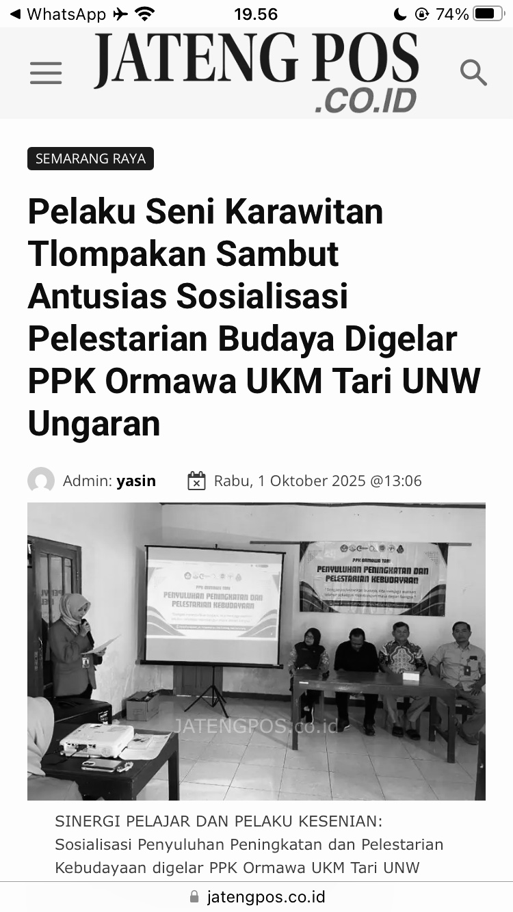

20 Agustus 2025
Pelatihan Tari Prajuritan Jaranan

Tim PPK Ormawa UKM Tari melaksanakan kegiatan latihan rutin tari yaitu
Tarian Jaranan yang diikuti oleh anak-anak Dusun Muludan, Desa Tlompakan,
yang diselenggarakan setiap hari Sabtu dan Minggu pukul 13.00–15.00.
Kegiatan ini bertujuan untuk melestarikan seni tari serta meningkatkan
minat dan keterampilan seni anak-anak di Dusun Muludan.
03 September 2025
Merti Dusun Muludan atau Sedekah Bumi
Pada hari Rabu, 3 September 2025, Tim PPK Ormawa UKM Tari membantu pelaksanaan acara Merti Dusun
di Desa Tlompakan. Acara ini dimeriahkan dengan penampilan
karawitan Langen Madyo Laras yang dibawakan oleh anak-anak Dusun Muludan.
Kehadiran Tim PPK Ormawa UKM Tari memberikan dukungan penuh dalam kelancaran kegiatan,
sekaligus menjadi wujud nyata kolaborasi Tim PPK Ormawa UKM Tari dengan masyarakat desa
dalam melestarikan seni dan budaya lokal. Suasana meriah dan kebersamaan tampak jelas,
menjadikan Merti Dusun tahun ini semakin semarak dan penuh makna.
08 September 2025
Sosialisasi Program Kerja PPKORMAWA, Pengembangan Desa Ekonomi Kreativ melalui Kesenian
Pada hari senin tanggal 08 September 2025 telah dilaksanakan kegiatan Sosialiasi Program Kerja PPKORMAWA bersama seluruh kepala dusun yg hadir dan masyarakat desa Tlompakan.
Kegiatan ini bertujuan untuk menyampaikan rencana program kerja yg akan dilaksanakan dalam rangka mendukung pengembangan ekonomi kreativ desa melalui Tim PPKORMAWA.
Acara berlangsung dengan khidmat dan baik. Serta mendapat apresiasi positif dari para pejabat desa setempat dan tokoh Desa
.Diharapkan melalui sosialisasi ini, program kerja yg telah dirancang dapat berjalan sesuai tujuan.
07 Juli 2025
Pendampingan latihan Karawitan Langen Madya Laras

Pada setiap hari Minggu, pukul 10.00–13.00 WIB, telah dilaksanakan kegiatan pendampingan latihan
rutin karawitan Langen Madyo Laras oleh Tim PPK Ormawa UKM Tari. Kegiatan ini bertempat di Dusun Muludan,
Desa Tlompakan, dan diikuti oleh anak-anak dusun setempat.
Pendampingan yang dilakukan bertujuan untuk meningkatkan keterampilan, menjaga konsistensi latihan, serta
memotivasi anak-anak agar terus melestarikan seni karawitan sebagai bagian dari budaya lokal.
08 September 2025
Sosialisasi Peingkatan Pelestarian Kebudayaan Desa Tlompakan

Sosialisasi Peningkatan Pelestarian Kebudayaan Desa Tlompakan
Pada hari Jumat, 26 September 2025, telah dilaksanakan kegiatan Penyuluhan Peningkatan
dan Pelestarian Kebudayaan yang diselenggarakan oleh Tim PPK Ormawa UKM Tari bersama Dinas
Pariwisata dan Dinas Kebudayaan. Acara ini bertujuan untuk meningkatkan pemahaman serta kesadaran
masyarakat dalam menjaga dan melestarikan nilai-nilai budaya lokal.
Kegiatan berlangsung dengan lancar dan mendapat antusiasme tinggi dari peserta yang terdiri dari
masyarakat desa Tlompakan, dan tokoh budaya pada karawitan. Sebagai penutup acara, dilakukan sesi
foto bersama antara pihak dinas, narasumber, panitia, dan peserta sebagai bentuk dokumentasi kegiatan.
08 September 2025
Perpaduan Karawitan dengan musik Lesung

musik tradisional yang dihasilkan dari alat penumbuk padi (lesung dan alu),
yang dimainkan secara ritmis oleh beberapa orang. Awalnya digunakan untuk menumbuk padi,
namun berkembang menjadi bentuk hiburan rakyat dengan irama yang khas dan energik, sering
dimainkan saat panen atau upacara adat.
26 Agustus 2025
Masyarakat Tlompakan sedang melakukan Dawuhan

Semarang – Warga Desa Tlompakan, Kecamatan Tuntang, Kabupaten Semarang, menggelar tradisi
Selametan Dawuhan di sekitar sendang desa. Ritual tahunan ini menjadi wujud syukur atas berkah
air yang selama ini menghidupi kebutuhan warga dan pertanian.
Acara diawali doa bersama yang dipimpin tokoh agama dan sesepuh desa,
dilanjutkan dengan kenduri bersama menggunakan tumpeng, hasil bumi, dan
jajanan tradisional. Selain sebagai ungkapan syukur, tradisi ini juga menjadi
pengingat pentingnya menjaga kelestarian sumber air sekaligus mempererat kebersamaan masyarakat.
Part 2
Dokumentasi Dawuhan

Dokumentasi Dawuhan
1 Oktober 2025
M

Semarang – Warga Desa Tlompakan, Kecamatan Tuntang, Kabupaten Semarang, PPKORMAWA Universitas Ngudi Waluyo mengadakan sosialisasi
Pelestarian Budaya agar menumbuhkan dan meningkatkan minat masyarakat agar tetap menjaga kelestarian budaya & tradisi, dan kegiatan ini disebarkan melalui media berita Jatengpos.
Baca Selengkapnya →